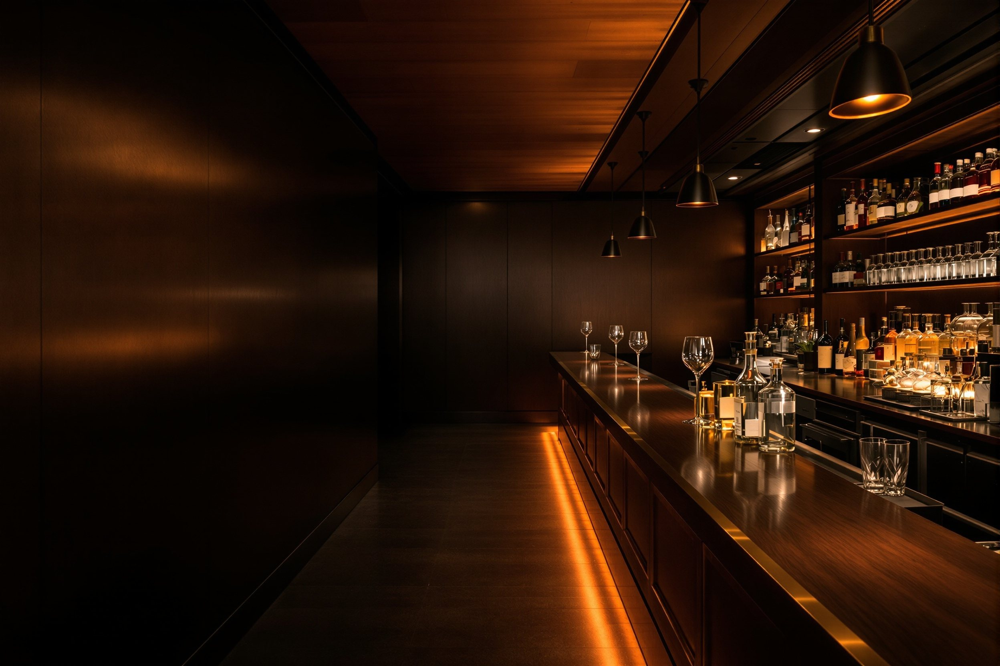

Markets › San Diego County › Type 41
San Diego County Type 41 Beer And Wine License For Restaurants
San Diego County is packed with neighborhood cafés, coastal bistros, and casual restaurants where guests expect beer or wine with their meal. The California Type 41 beer-and-wine license is often the most efficient way to add alcohol service to a food-led concept without taking on the complexity of a full bar.
What it permits
What The Type 41 Beer And Wine Eating Place License Authorizes
A Type 41 license is an on-sale beer-and-wine license tied to a bona fide eating place. In San Diego County, it typically allows you to:
- Serve beer and wine for on-premises consumption with meals
- Offer draft, bottled, and canned beer, plus still and sparkling wine
- Integrate beverage service into table, counter, or quick-service formats
- Maintain a family-friendly atmosphere where minors are allowed with their parents or guardians
The full ABC authorisation wording for every classification is on the classifications page.
Is it the right one
When A Type 41 License Makes Sense For Your San Diego Restaurant Or Café
A Type 41 license may be ideal if:
- Your primary identity is a restaurant, café, pizzeria, or brunch spot, not a bar
- Beer and wine are intended to complement your menu, not drive a nightlife model
- You expect significant family, daytime, or tourist traffic
- Your space and budget do not justify a full bar build-out or bar-focused staffing
If your concept leans heavily on cocktails and spirits, a Type 47 license may better match your business plan. We help you compare both options using your actual floor plan, hours, and target clientele.
How we work it
How Liquor License Agents Helps With Type 41 Licensing And Transfers In San Diego County
For both new openings and acquisitions, aligning your Type 41 license with city approvals, coastal or downtown rules, and your lease is critical. Liquor License Agents helps by:
- Reviewing your kitchen, menu, and layout to confirm bona fide eating place status
- Advising whether to apply for a new Type 41 license or purchase an existing license by transfer
- Supporting lease and purchase negotiations when a Type 41 license is part of a restaurant sale
- Preparing ABC applications, premises diagrams, and ownership disclosures tailored to your operation
- Coordinating with city and county planning staff on patios, outdoor dining, and parking requirements
- Monitoring ABC review and helping you respond to questions, protests, or proposed operating conditions
Our goal is to make licensing a predictable part of your opening timeline, not a last-minute obstacle.
Asked most
San Diego County Type 41 FAQs
What can I serve with a California Type 41 beer and wine license?
Do I need a full kitchen and bona fide food service to qualify for a Type 41 license?
Can I upgrade from a Type 41 beer and wine license to a Type 47 full liquor license?
Are there restrictions on outdoor dining, patios, or sidewalk service with a Type 41 license?
How long does it usually take to obtain or transfer a Type 41 license in San Diego County?
Can I offer happy hour, drink specials, or brunch cocktails with a Type 41 license?
Broader questions — cost, timelines, city approval — are answered on the FAQ page.
By classification
The other four classifications in San Diego County
What each classification authorises is set out on the classifications page, which owns those definitions.
Schedule an Appointment | (800) 799-9081
If you are opening or acquiring a restaurant or café in San Diego County and want to add beer-and-wine service, you can call (800) 799-9081 to schedule an appointment and review whether a Type 41 license aligns with your concept, site, and budget.